军队 3D 素材与实机接入
12 个原始模型 · 49 张匹配贴图 · 18 套主帅头像
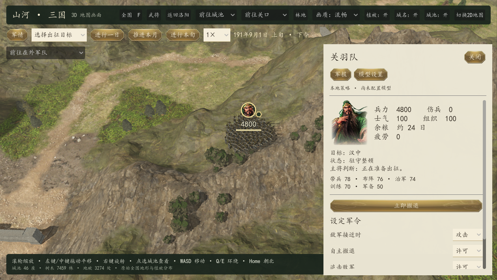
点击主帅头像查看军队详情与军令，直接在 3D 地图出征和撤退。
地图正在使用：项目持械站姿与行军循环
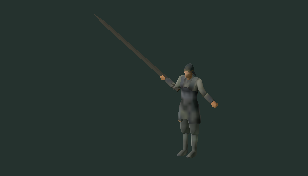
原步兵的 23 根骨骼与权重；525 面/帧；持械站姿 + 8 帧项目制作的行军循环。原作战斗动画尚未绑定。
核实后的原始模型

持长兵器步兵 A · 525 面
d3c18f06 · 525 三角面
静态原模型；原作动画未绑定
GLB 模型
持长兵器步兵 B · 2625 面
5b38b582 · 2625 三角面
静态原模型；原作动画未绑定
GLB 模型
马匹 · 高面数待简化
cdf4bc12 · 41891 三角面
静态原模型；原作动画未绑定；高面数，编队接入前需简化
GLB 模型
象兵 · 姿态待校正
a9a19ea3 · 817 三角面
静态原模型；原作动画未绑定；姿态待校正
GLB 模型
三角军旗
80c82506 · 596 三角面
静态原模型；原作动画未绑定；旗面贴图未找到
GLB 模型
燕尾军旗
9eea5b67 · 722 三角面
静态原模型；原作动画未绑定；旗面贴图未找到
GLB 模型
攻城器械 A
682039a2 · 962 三角面
静态原模型；原作动画未绑定
GLB 模型
攻城器械 · 楼车
e5dc4fba · 990 三角面
静态原模型；原作动画未绑定
GLB 模型
攻城器械 · 箱式车辆
c0d5fa9c · 1005 三角面
静态原模型；原作动画未绑定
GLB 模型
船只 · 桨船
bd1ef9be · 1434 三角面
静态原模型；原作动画未绑定
GLB 模型
船只 · 双体船
9962ab33 · 1154 三角面
静态原模型；原作动画未绑定
GLB 模型
船只 · 帆船
9a851cde · 1483 三角面
静态原模型；原作动画未绑定
GLB 模型主帅头像
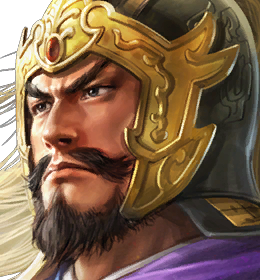
袁绍袁尚孙策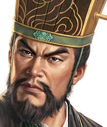
田丰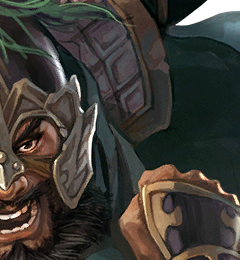
颜良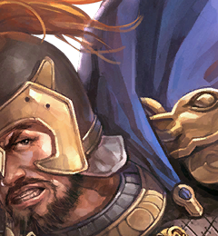
文丑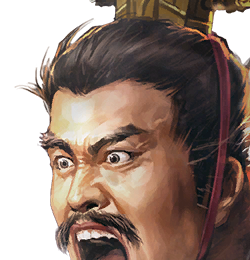
袁谭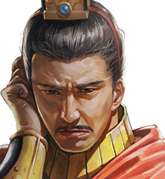
袁熙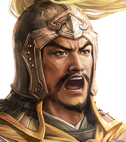
廖化关兴张苞张遵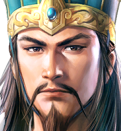
诸葛亮关凤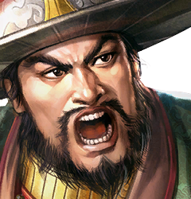
周仓关羽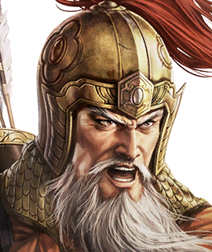
黄忠魏延接入边界
马匹、象、船与器械为已核实候选，当前地图编队统一使用步兵。军旗旗面贴图尚未找到。32 个战役节点使用估算坐标，未还原原作道路寻路。
素材清单与验证说明